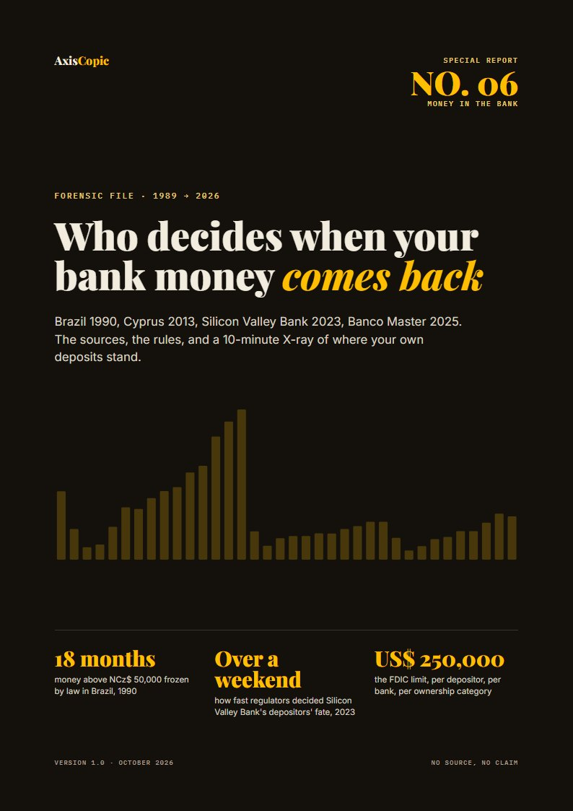
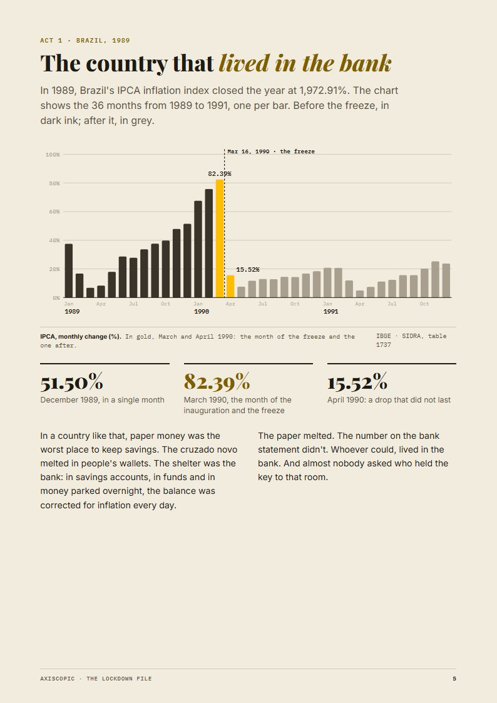
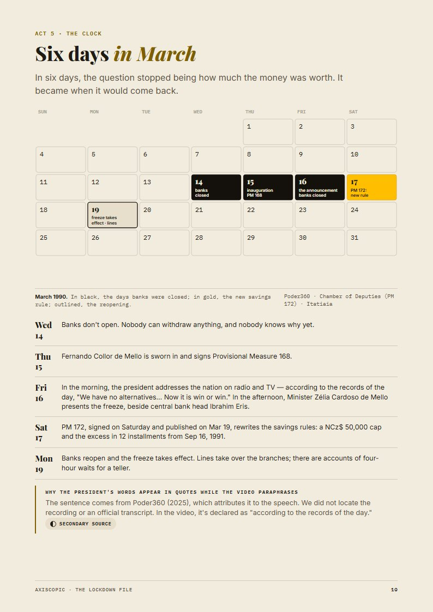
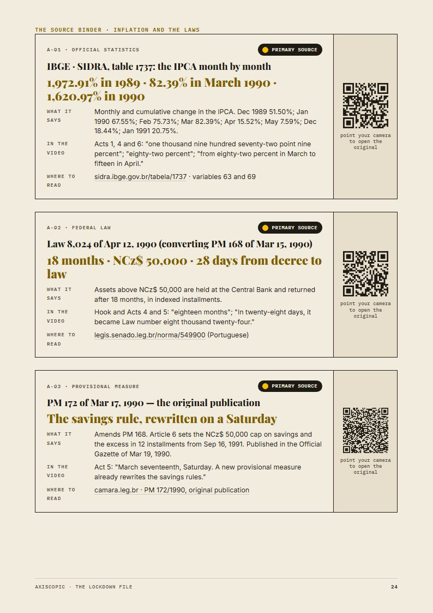
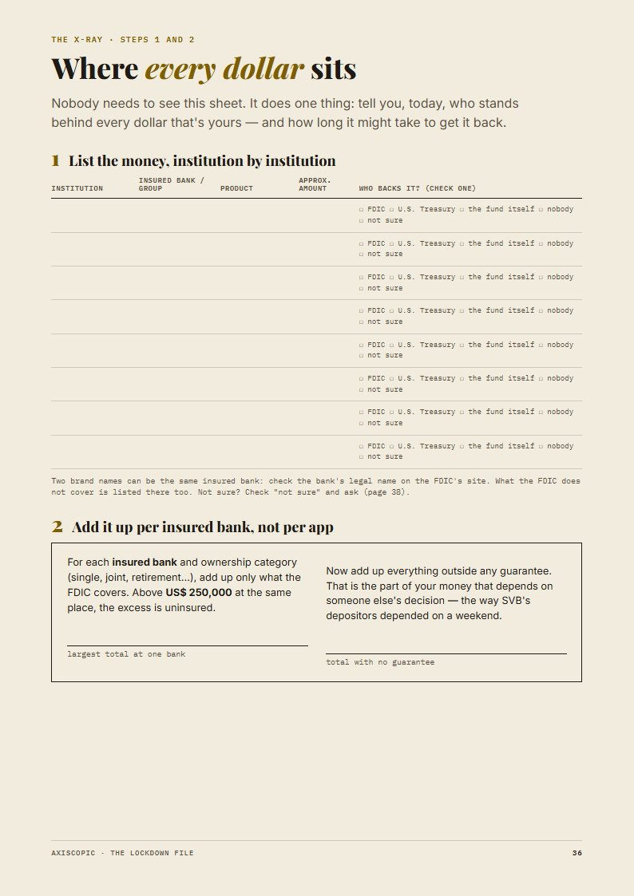
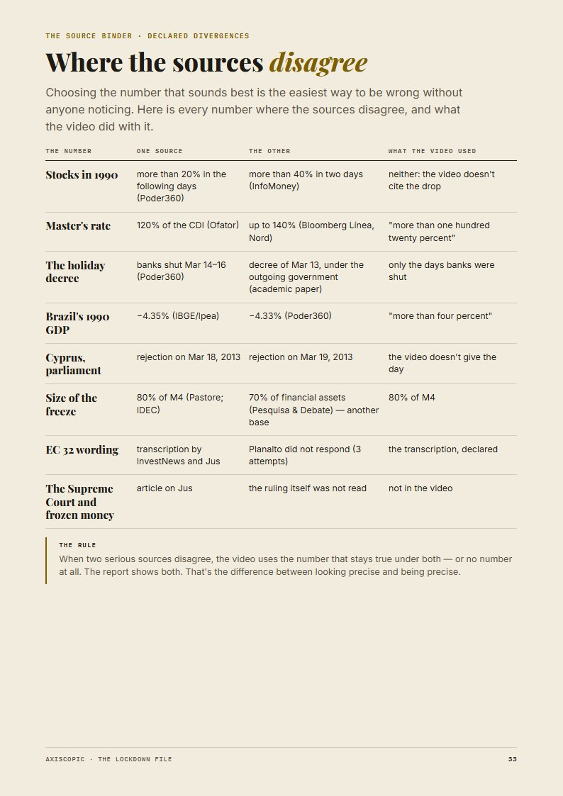

- File
- No. 06 · The Lockdown File
- Covers
- Brazil 1990 · Cyprus 2013 · Silicon Valley Bank 2023 · Banco Master 2025
- Length
- 40 pages in five parts
- Sources
- Brazilian statutes · IBGE · FGC · California DFPI · FDIC · Library of Congress · contemporary press
- Format
- PDF (A4) for print and screen, with a QR code to every original
- Refund
- 7 days, no questions asked
Would you know how long it takes, before you need to?
On March 16, 1990, Brazilians learned that anything above NCz$ 50,000 in the bank, about US$ 1,300 at the official rate, was frozen by decree. It came back 18 months later, in 12 installments.1
In March 2023, Silicon Valley Bank customers asked for US$ 42 billion in a single day.2 Regulators decided over a weekend to cover deposits above the limit. This file doesn't tell you where to put your money. Nobody honest can, without knowing your situation. It shows you who decided each time, with the documents, and how to check what the public rules cover today.
The decision-maker changes. The mechanism doesn't.
| Year | The line | Speed |
|---|---|---|
| 1990 | Brazil: a provisional measure froze balances above NCz$ 50,000. Repayment came in 12 installments.1 | 18 months |
| 2023 | Silicon Valley Bank: US$ 42 billion requested in one day. By Sunday, regulators covered deposits above the limit.2 | One weekend |
| 2025 | Banco Master, Brazil: the deposit-insurance fund began paying about 800,000 creditors.3 | About 60 days |
Each time, the money in the bank was a loan to the bank, and someone decided when it would come back. The file adds the record of each decision, Cyprus in 2013 included, and what the FDIC limit (US$ 250,000 per depositor, per insured bank, per ownership category) does and doesn't cover.
5 parts. Each one answers a different piece of the question.
| Part | What it does | Length |
|---|---|---|
| The Story File | The full mechanism of the 18 months, from the money machine to the 12-installment repayment, and what was cut from the film for time. | 20 pp. |
| The Source Binder | Every number beside the statute, bulletin or filing it came from, with a QR code and a confidence seal. | 13 pp. |
| The 10-Minute X-Ray | A worksheet: where your money sits, which accounts share one limit, and what sits above it. Names no bank or product. | 3 pp. |
| The Five Questions | What to ask your bank or broker, each with the documented case behind it. | 1 p. |
| The Living File | For 12 months, if a rule in the file changes, the new version arrives by e-mail with the source. | 1 p. |






Who this is not for.
- Anyone looking for a trade, a ticker or a bank recommendation. We don't publish them.
- Anyone who wants to be told another freeze is coming. We don't know, and neither does anyone selling that.
- Anyone who needs legal or tax advice on a specific account. This is a history file with public rules, not counsel.
One price. Same today as next month.
7-day refund, no questions asked: write to us and every cent comes back. No countdown, no upsell maze, no subscription hidden in the checkout.
Short answers.
Is this investment advice?
No. It's educational content on economic history. We don't analyze, recommend or offer any security, issuer or financial institution.
What format is it?
A 40-page PDF (A4) for print and screen. Each number in the Source Binder has a QR code that opens the original document. Yours to keep.
I'm not in Brazil. Is it for me?
Yes. The case starts in Brazil, but the file also covers Cyprus and Silicon Valley Bank, and the worksheet and questions use the FDIC rules.
How do refunds work?
E-mail us within 7 days of purchase and we refund the full amount. No form, no reason required.
Who's behind it?
The AxisCopic editorial team, the people behind the documentaries. Same research, same rule: no source, no claim.
Read the rule before you need it.
Get the file · $29Rather start free? Get the free sample: Where Your Money Is Protected.
- Lei nº 8.024, April 12, 1990, converting Provisional Measure 168 of March 15, 1990 (Brazilian Senate legislation database).
- California Department of Financial Protection and Innovation, order taking possession of Silicon Valley Bank, March 10, 2023.
- Fundo Garantidor de Créditos (FGC), communiqué on Banco Master, November 18, 2025.